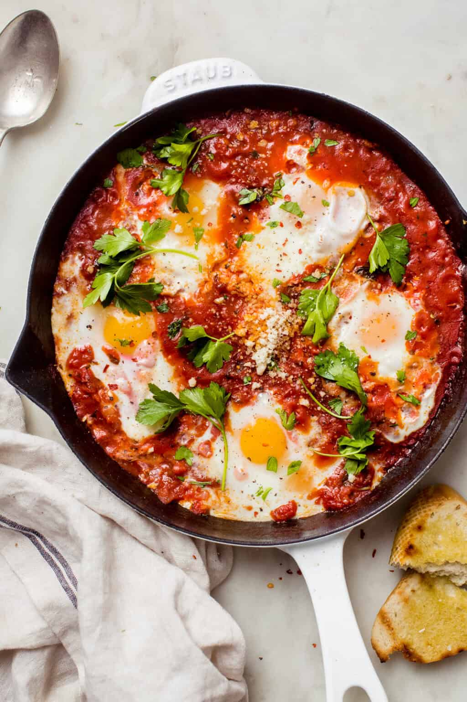

Eggs in purgatory (or Uova All'inferno or Uova in Purgatorio) is the italian version of Shakshuka. A hearty, herb-scented, spicy, and robust tomato sauce with poached eggs. It is usually served with toasted slices of baguette. Great for breakfast, brunch or brinner.